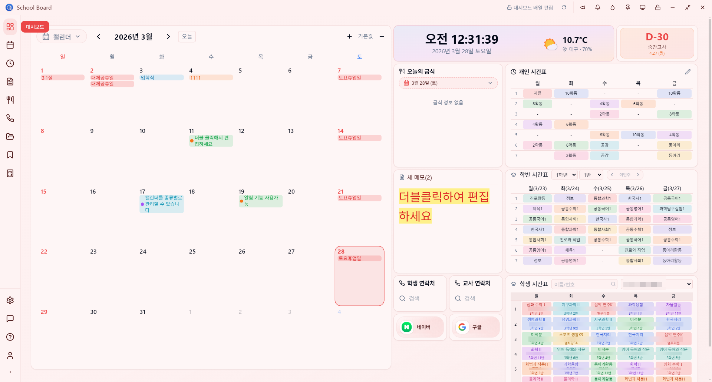
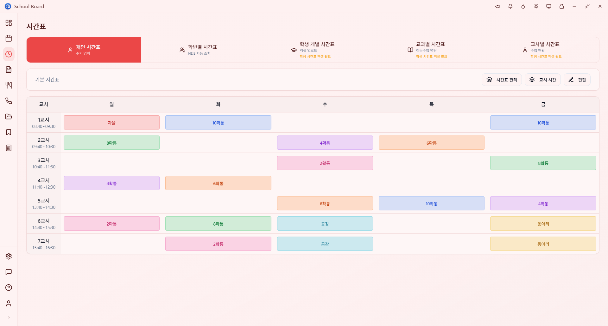
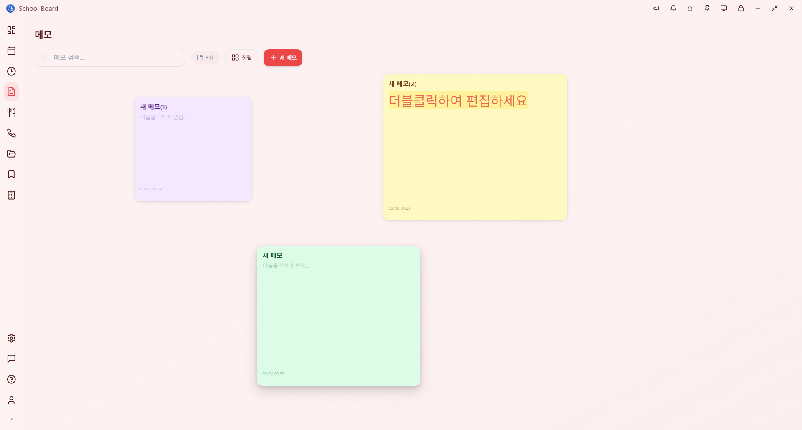
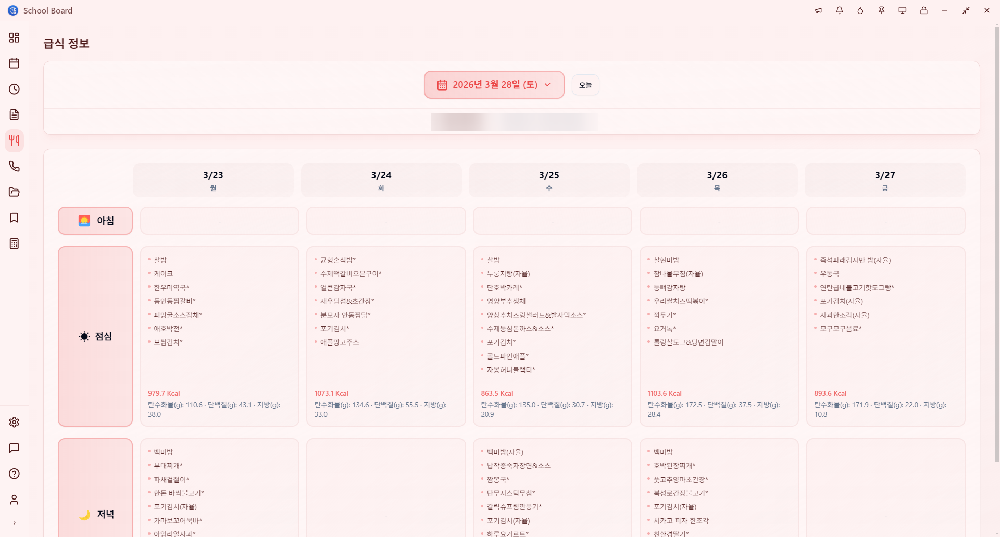

05 / 북마크
자주 쓰는 사이트를
자주 쓰는 사이트를
빠르게 접근
NEIS, 교육포털, 학교 홈페이지 등 자주 사용하는 웹사이트를 북마크로 저장하고 한 번에 열어보세요.

Features
시계, 날씨, 시간표, 급식을 한 화면에. 벤토 그리드로 위젯을 자유롭게 배치.
NEIS에서 자동으로 불러오거나 직접 입력. 학반별, 교사별, 학생 개별 조회까지.
조·중·석식 3끼 모두 확인. 알레르기 정보도 함께 표시.
학사일정과 개인 할 일을 통합 관리. D-Day 카운터로 중요한 날짜를 놓치지 마세요.
자유 배치 보드에 드래그 앤 드롭. 리치 텍스트 편집, 6가지 파스텔 색상.
교사·학생 연락처를 분리 관리. 엑셀 붙여넣기, CSV, 인쇄까지.
사칙연산부터 단위 변환, 등급 계산기까지. 배점 계산으로 시험 출제도 쉽게.
나이스, K-에듀파인 자동 로그인. 인증서부터 비밀번호까지 원클릭.
벚꽃부터 네온까지 20종 프리셋. 원하는 색상으로 커스텀 테마도 만들 수 있어요.
시계, 날씨, 시간표, 급식을 한 화면에. 벤토 그리드로 위젯을 자유롭게 배치.
NEIS에서 자동으로 불러오거나 직접 입력. 학반별, 교사별, 학생 개별 조회까지.
조·중·석식 3끼 모두 확인. 알레르기 정보도 함께 표시.
학사일정과 개인 할 일을 통합 관리. D-Day 카운터로 중요한 날짜를 놓치지 마세요.
자유 배치 보드에 드래그 앤 드롭. 리치 텍스트 편집, 6가지 파스텔 색상.
교사·학생 연락처를 분리 관리. 엑셀 붙여넣기, CSV, 인쇄까지.
사칙연산부터 단위 변환, 등급 계산기까지. 배점 계산으로 시험 출제도 쉽게.
나이스, K-에듀파인 자동 로그인. 인증서부터 비밀번호까지 원클릭.
벚꽃부터 네온까지 20종 프리셋. 원하는 색상으로 커스텀 테마도 만들 수 있어요.
시계, 급식, 시간표, 학사일정, 메모까지. 위젯 기반 대시보드에서 오늘 필요한 모든 정보를 한 화면에 확인하세요.
학교 이름만 검색하면 시간표가 자동으로. API 키 없이 NEIS에서 바로 불러옵니다.


떠오르는 생각, 할 일, 업무 메모를 빠르게 기록하고 관리할 수 있습니다.
NEIS 연동으로 오늘의 급식 메뉴를 자동으로 확인. 알레르기 정보도 함께 표시됩니다.

NEIS, 교육포털, 학교 홈페이지 등 자주 사용하는 웹사이트를 북마크로 저장하고 한 번에 열어보세요.

교재, 수업 자료, 공문 등 학교 업무에 필요한 파일을 카테고리별로 정리하고 빠르게 찾을 수 있습니다.
교장선생님, 교감선생님, 동료 교사들의 연락처를 한 곳에서 관리하세요. 검색과 그룹 분류도 지원합니다.

어떠한 데이터도 외부 서버에 전송되거나 저장되지 않습니다.
시간표, 메모, 연락처, 업무자료 — 모든 것이 선생님의 PC 안에서만 관리됩니다.
클라우드 서버 없이
온전히 로컬에서 동작
인터넷 연결 없어도
모든 기능 사용 가능
계정 생성 없이
설치 후 즉시 사용
Video Guide
각 기능별로 영상으로 쉽게 배워보세요
Download
Windows에 설치하고 학교 이름만 검색하면 끝. 복잡한 설정 없이 1분 안에 시작할 수 있어요.
* 위 코드를 복사해서 설치 시 라이선스 입력란에 붙여넣기 해주세요.
코드 서명 전이라 브라우저에서 보안 경고가 나타날 수 있으며, 실제 보안과는 무관합니다.
"확인되지 않은 파일 다운로드" 창이 나타나면 그대로 [확인되지 않은 파일 다운로드]를 눌러주세요.


설치 파일 실행 시 Windows 보안 경고가 나타날 수 있습니다.


* 코드 서명 완료 후에는 위 경고들이 더 이상 표시되지 않습니다.